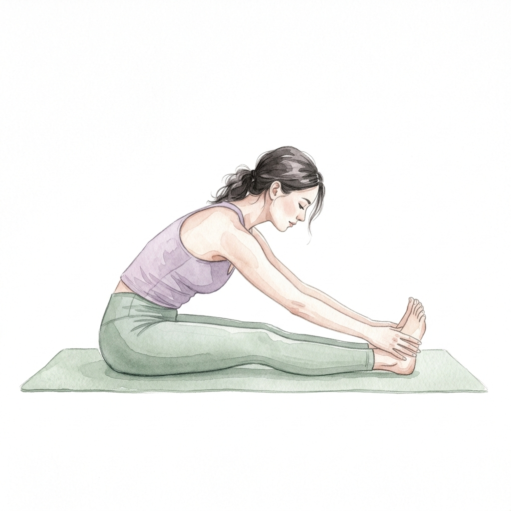
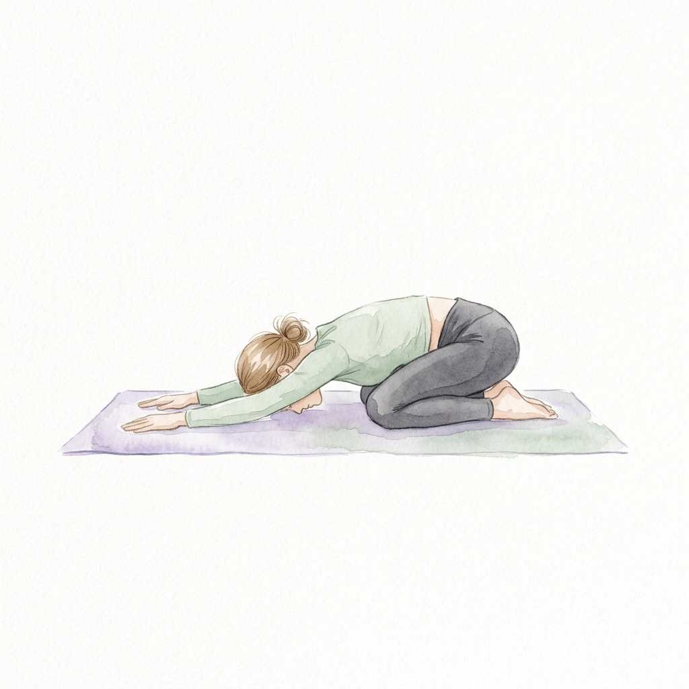
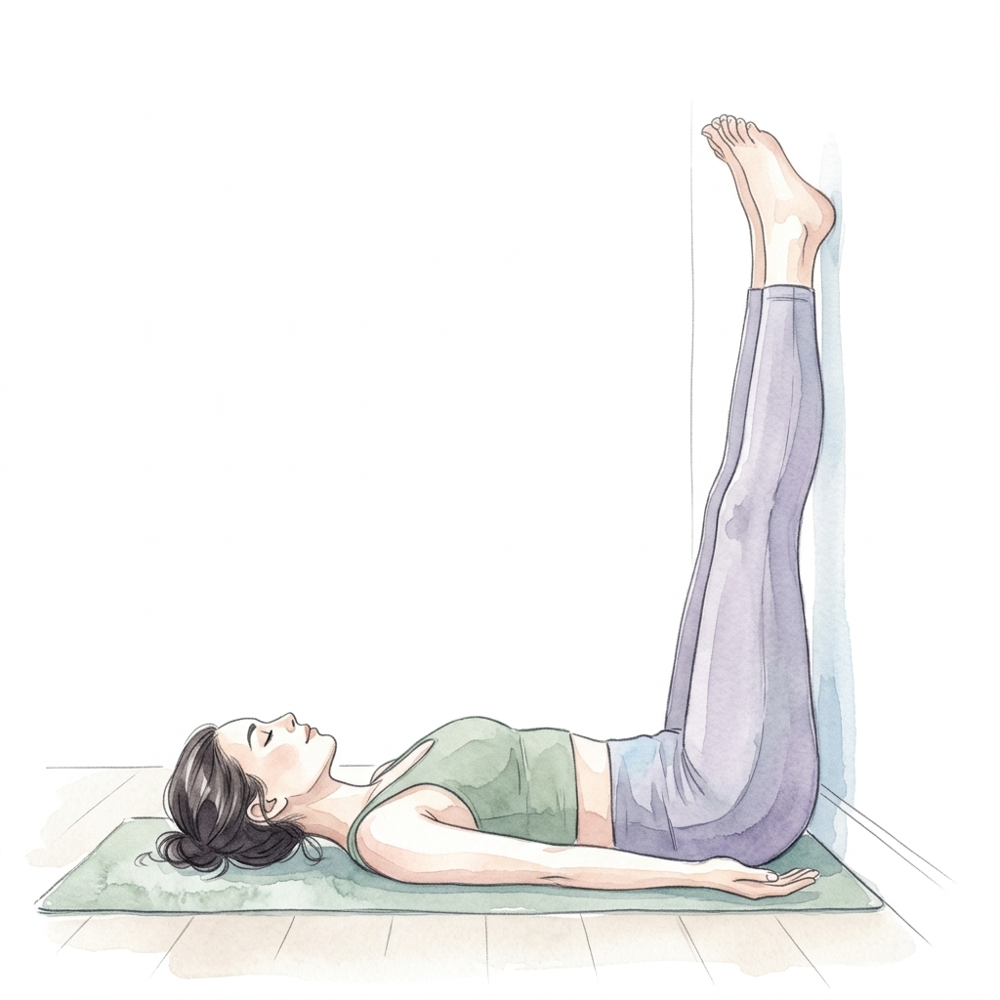
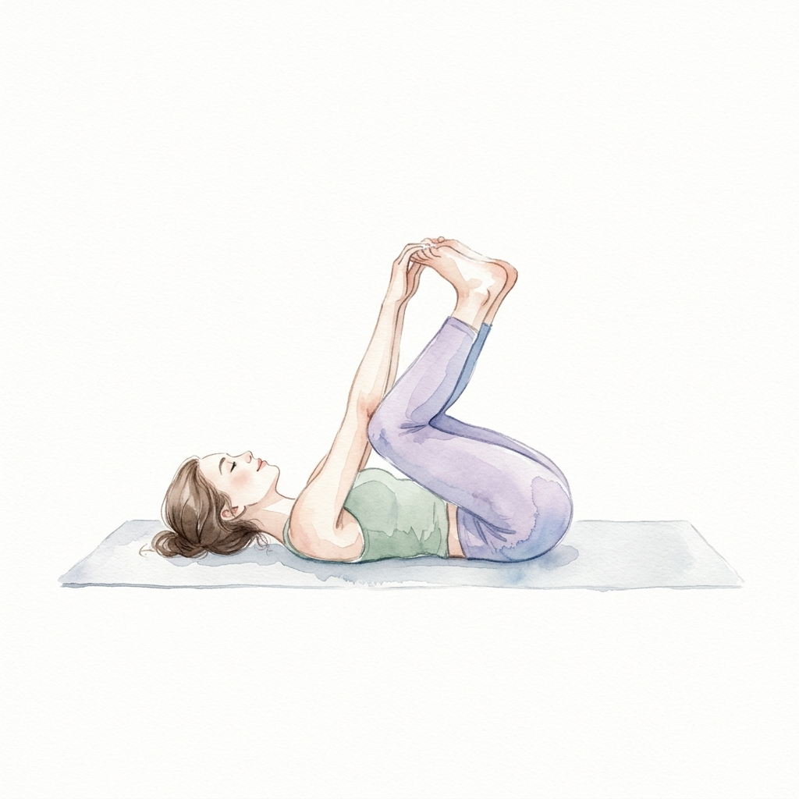
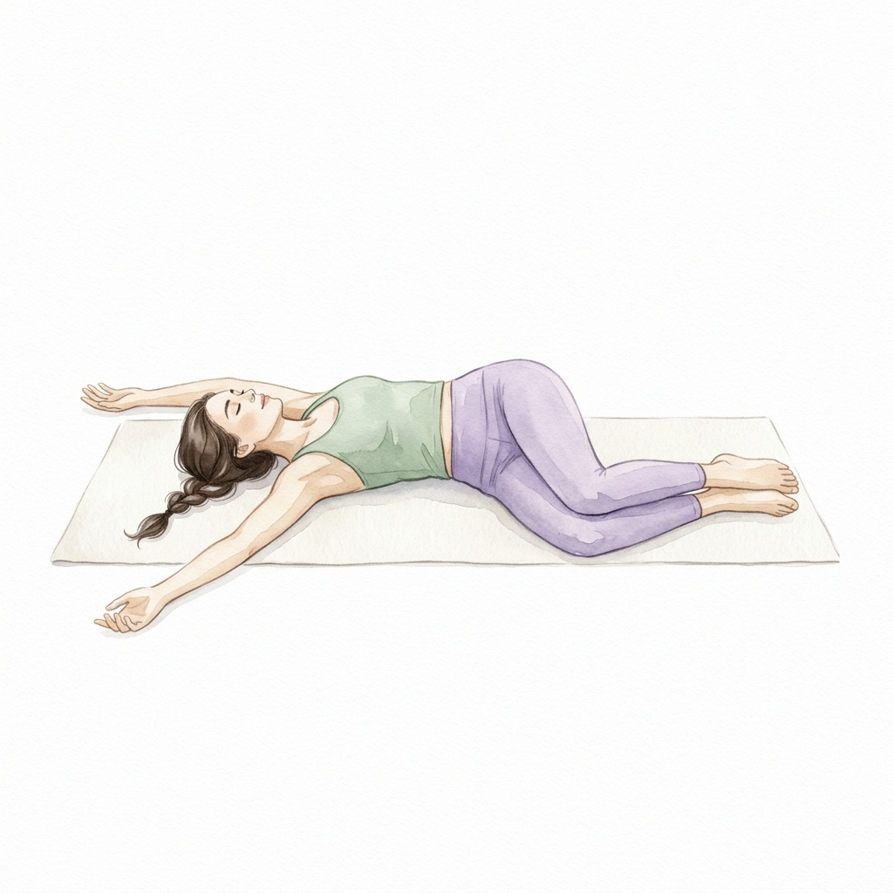
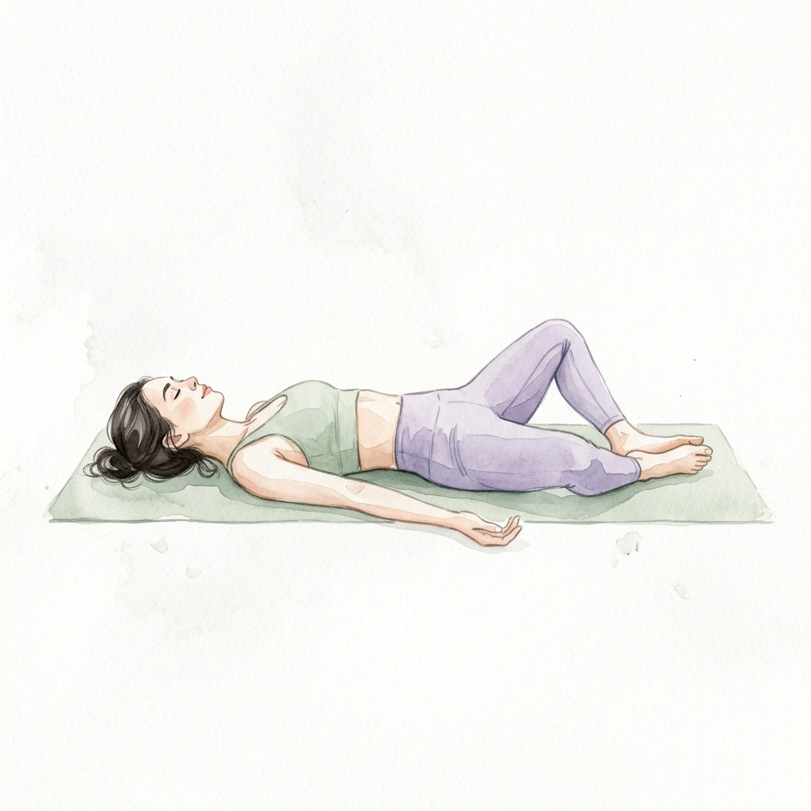
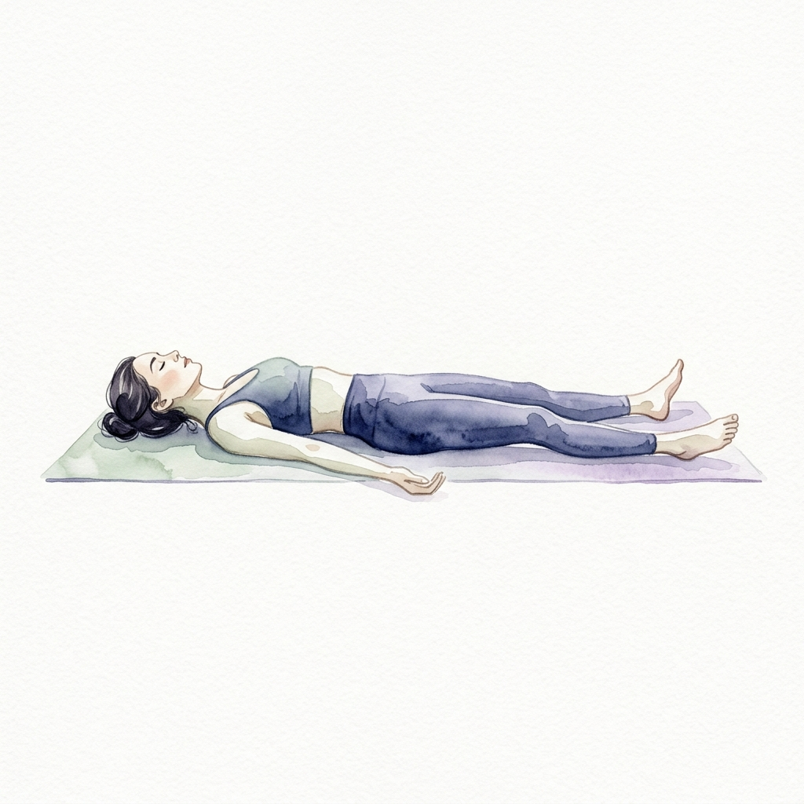

Bạn nằm trên giường, mắt nhắm nhưng đầu óc không chịu ngừng? Hàng ngàn suy nghĩ chạy vòng vòng, cơ thể mệt mỏi nhưng giấc ngủ vẫn không đến? Bạn không đơn độc — theo WHO, khoảng 30% người trưởng thành gặp vấn đề về giấc ngủ.
Tin tốt: Yoga là một trong những phương pháp tự nhiên hiệu quả nhất để cải thiện giấc ngủ mà không cần thuốc. Chỉ cần 15–20 phút trước khi lên giường, 7 tư thế dưới đây sẽ giúp hạ cortisol, kích hoạt hệ thần kinh phó giao cảm, và đưa bạn chìm vào giấc ngủ sâu một cách tự nhiên.
🔬 Khoa học nói gì về Yoga và giấc ngủ?
Nghiên cứu từ Đại học Harvard (2020) cho thấy yoga tác động trực tiếp lên dây thần kinh phế vị (Vagus Nerve), chuyển hệ thần kinh từ trạng thái "chiến-hoặc-chạy" (fight-or-flight) sang "nghỉ ngơi-tiêu hóa" (rest-and-digest). Kết quả:
Tại sao yoga giúp ngủ ngon hơn? 🌙
Buổi tối chỉ tập tư thế nhẹ nhàng, chậm, giữ lâu. Tuyệt đối KHÔNG tập Chào Mặt Trời, Plank, hay bất kỳ tư thế nào làm tăng nhịp tim. Mục tiêu: hạ năng lượng xuống, không phải nâng lên!
7 tư thế Yoga trước khi ngủ 🧘♀️

Gập người về trước (ngồi)
Paschimottanasana
Khi gập người, áp lực nhẹ lên bụng kích thích dây thần kinh phế vị — giảm nhịp tim và hạ huyết áp ngay lập tức. Kéo giãn toàn bộ mặt sau cơ thể: từ gân kheo, hông, lưng đến cổ.
📋 Cách thực hiện
- Ngồi thẳng, hai chân duỗi thẳng phía trước
- Gập từ hông (không phải từ eo) — để thân người đổ về trước
- Tay nắm mắt cá, bàn chân, hoặc đặt lên ống chân — không cần chạm tay vào chân
- 💡 Biến thể: Đặt gối trên đùi để tựa bụng + ngực xuống, thoải mái hơn

Tư thế Em bé
Balasana
Tư thế "về nhà" của yoga — mang lại cảm giác an toàn, bảo vệ, như được ôm ấp. Kéo giãn lưng dưới, thả lỏng vai, và khi trán chạm sàn sẽ kích thích điểm "Thần kinh nghỉ ngơi" (Third Eye point) giúp an thần tự nhiên.
📋 Cách thực hiện
- Từ tư thế ngồi, chuyển sang quỳ, hai gối mở rộng bằng vai
- Ngồi mông về gót chân, gập người về trước
- Trán chạm sàn — hai tay duỗi phía trước hoặc buông dọc thân
- Thở chậm — cảm nhận lưng phồng lên theo mỗi hơi hít vào

Chân lên tường
Viparita Karani
Được mệnh danh là "tư thế dỗ giấc ngủ số 1". Từ nay bạn sẽ chỉ nằm ngửa. Đảo ngược dòng máu từ chân về tim, giảm sưng phù, hạ nhịp tim, và đưa hệ thần kinh vào trạng thái thư giãn sâu chỉ sau 3–5 phút.
📋 Cách thực hiện
- Nằm ngửa, mông sát tường, hai chân duỗi thẳng lên dọc tường
- Hai tay buông dọc thân hoặc đặt lên bụng
- Nhắm mắt, thở chậm và sâu — cảm nhận máu chảy về tim
- 💡 Biến thể: Đặt gối dưới hông để nâng xương chậu nhẹ lên

Em bé vui vẻ
Ananda Balasana
Tư thế vui nhộn nhưng cực kỳ hiệu quả trong việc mở hông và thư giãn lưng dưới. Lắc nhẹ sang hai bên tạo cảm giác "massage" cột sống, giải phóng căng thẳng vùng thắt lưng — nơi tích tụ stress nhiều nhất.
📋 Cách thực hiện
- Rút chân từ trên tường xuống, kéo hai đầu gối về phía nách
- Hai tay nắm mép ngoài bàn chân, kéo gối xuống thấp
- Giữ xương cụt ép sàn — lắc nhẹ sang trái phải
- Mỉm cười — thả lỏng hàm, mặt, trán

Vặn xoắn nằm ngửa
Supta Matsyendrasana
Tư thế "xả stress" tuyệt vời — vặn nhẹ cột sống giúp giải phóng căng thẳng tích tụ ở lưng dưới trong ngày, kích thích hệ tiêu hóa, và mang đến cảm giác "được thả lỏng hoàn toàn" trước khi ngủ.
📋 Cách thực hiện
- Kéo ôm đầu gối phải về ngực
- Dùng tay trái đưa gối phải sang bên trái, vai phải vẫn chạm sàn
- Tay phải dang ngang, mắt nhìn về phía phải
- Thở sâu 8 nhịp — để trọng lực làm phần còn lại. Đổi bên.

Bươm bướm nằm ngửa
Supta Baddha Konasana
Tư thế mở hông nhẹ nhàng nhất — không cần gắng sức. Mở vùng bẹn và ngực cùng lúc, giúp hơi thở sâu và đều hơn. Cảm giác như cơ thể đang "nở bung" ra sau một ngày co lại.
📋 Cách thực hiện
- Nằm ngửa giữa thảm/giường, hai lòng bàn chân chạm nhau, gối rơi hai bên
- Tay đặt lên bụng hoặc buông dọc thân, lòng bàn tay ngửa lên
- Nếu đầu gối cao quá — kê gối/chăn dưới đùi để giữ thoải mái
- Thở bụng chậm, quan sát bụng phồng lên xẹp xuống

Tư thế Xác — Nghỉ ngơi sâu
Savasana
Tư thế kết thúc và cũng là tư thế quan trọng nhất. Toàn bộ cơ thể buông thả hoàn toàn. Đây là lúc hệ thần kinh "lưu lại" trạng thái thư giãn — và chuyển thẳng vào giấc ngủ sâu.
📋 Cách thực hiện
- Duỗi thẳng hai chân, mở tự nhiên, tay buông dọc thân, lòng bàn tay ngửa
- Nhắm mắt — quét cơ thể từ đỉnh đầu đến ngón chân, thả lỏng từng phần
- Thả hàm, lưỡi rời khỏi vòm miệng, trán mềm
- Không cần kiểm soát hơi thở — để cơ thể tự thở
Kỹ thuật thở 4-7-8 — "Viên thuốc ngủ tự nhiên" 🌬️
Kết hợp với 7 tư thế trên, kỹ thuật Thở 4-7-8 (do Tiến sĩ Andrew Weil phát triển) là vũ khí bí mật giúp bạn ngủ nhanh hơn. Thực hiện trong tư thế Savasana hoặc ngay khi lên giường:
🌬️ Hướng dẫn Thở 4-7-8
Lặp lại 4 vòng. Sau 2 tuần tập đều, tăng lên 8 vòng. Hầu hết mọi người ngủ thiếp trước khi hết 8 vòng.
Trình tự tập gợi ý — 20 phút trước khi ngủ ⏰
Dưới đây là flow hoàn chỉnh giúp bạn chuyển từ trạng thái tỉnh táo sang sẵn sàng ngủ (chỉ cần di chuyển từ ngồi xuống nằm):
Tắt đèn chính, bật đèn vàng/nến. Bật nhạc thiền tần số 432Hz. Bắt đầu từ tư thế Gập trước ngồi, để đầu buông, cổ thả lỏng hoàn toàn.
Chuyển sang quỳ và úp người xuống. Trán chạm sàn, thở chậm. Cảm giác "co lại" an toàn sau một ngày bộn bề.
Xoay người nằm ngửa sát tường, chân duỗi lên. Nhắm mắt, thở sâu. Từ giây phút này trở đi, bạn sẽ không ngồi dậy nữa.
Rút chân từ tường xuống, nắm mép bàn chân, lắc nhẹ. Giải phóng nốt phần thắt lưng vùng chậu.
Hạ chân xuống, vặn xoắn sang trái 2 phút, sang phải 2 phút. Thở ra thật dài trong mỗi lần vặn eo.
Hai chân tạo hình kim cương, để trọng lực mở hông. Tay đặt tịnh tiến nơi vùng bụng, đếm 20 nhịp thở nhẹ.
Đạp chân duỗi thẳng dài. Buông tất cả. Thực hiện Thở 4-7-8 trong 4 vòng. Không cần "cố ngủ" — giấc ngủ sẽ tự đến.
- Tập trên sàn cứng vừa — giường quá mềm không hỗ trợ cột sống đúng cách trong các tư thế vặn xoắn
- Không ăn nặng 2 giờ trước khi tập — dạ dày đầy sẽ khó chịu trong tư thế gập và vặn
- Nếu bị đau lưng: bỏ qua tư thế Gập trước, thay bằng giữ lâu hơn ở Em bé
- Phụ nữ mang thai: tránh nằm ngửa sau tam cá nguyệt thứ 2 — thay bằng nằm nghiêng trái
- Mất ngủ nghiêm trọng (>3 tuần liên tục): cần gặp bác sĩ kết hợp yoga
Biến yoga tối thành thói quen ngủ ngon 🌿
Nghiên cứu cho thấy nếu bạn tập yoga trước giờ ngủ đều đặn trong 8 tuần, chất lượng giấc ngủ cải thiện đáng kể và duy trì lâu dài. Hãy bắt đầu nhẹ nhàng:
- 📌 Tuần 1: Chọn 3 tư thế yêu thích, tập 10 phút
- 📌 Tuần 2–3: Tập đủ 7 tư thế + thở 4-7-8
- 📌 Sau 21 ngày: Cơ thể sẽ tự "đòi" tập — bạn sẽ cảm nhận sự khác biệt rõ rệt!
Kết hợp yoga tối với tắt màn hình trước 30 phút, uống trà hoa cúc ấm, và giữ phòng ngủ mát (18–20°C). Bộ ba này tạo nên "nghi thức ngủ ngon" mà MÂY tốt hơn rất nhiều so với uống thuốc ngủ!